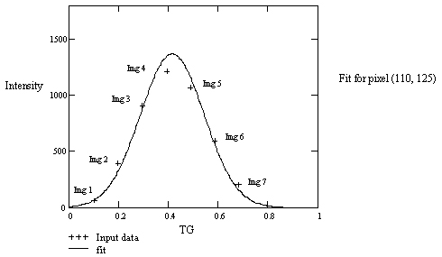

Proprietary to General Electric Company
Direction 5440000, Rev# 5
Signa HDxt Service Methods
Module Version 1.0, Version Date 5/15/07
Proprietary to General Electric Company |
The basic idea of TRMAP is to do the TG portion of Auto Prescan on a voxel by voxel basis. This is done by acquiring a series of identical spin echo images (the default 7 will be used for this discussion), except that each image is acquired at a different TG value. The TG values are chosen in such a fashion that all voxels in the scanned object will see the flip angle increment in 7 steps from a value much less than 90 degrees to a value much greater than 90 degrees. For each pixel location, a gaussian curve is fit to the values taken from the seven images. The location of the peak of the gaussian will give the optimal TG value and the corresponding max pixel intensity for the pixel location. These values provide the data for the maps as discussed above.
During the TG entry point of Auto Prescan, the goal is to find the RF energy (proportional to TG value) that will flip the spins in the scanned object by 90 degrees. This flip angle will give the maximum signal in the receive coil. The most straight forward method to do this is to play an RF pulse with so little energy that we can be sure the spins are flipped less than 90 degrees, measure the received signal and then gradually increase the RF energy until we hit a max value and the received signal starts decreasing again. The TG value that gives the max signal will correspond to a 90 degree flip angle.
Prescan looks at the signal from the entire center slice of the object being scanned and sets the TG value to flip as many spins to 90 degrees as possible. If we are scanning a homogenous phantom and a perfect scanner, we would expect all spins to flip the same amount for a given TG and the resulting image of the phantom to be iso-intense. Clearly, this is not what happens in reality, but if we use a spin echo sequence for our data acquisition, we can eliminate many problems (B0 effects, T2* etc.) and more accurately attribute the remaining non-uniformity of the image to RF effects (transmit or receive). However, there is one RF effect that is not a scanner problem: If the wavelength of the RF is close to the dimensions of the phantom, we see a standing wave pattern in the phantom (this is typical for 1.5T and less significant at lower field strength). For a cylindrical scan geometry, this results in a donut shaped bright region in the phantom.
TRMAP will do essentially the same processing as the TG entry point in prescan, but do it on a pixel by pixel basis for every pixel that is part of the phantom. The first thing to do is to find out which TG values would be appropriate to guarantee that we capture points on both sides of the 90 degree flip angle for all pixels of interest. To do that, we perform an Auto Prescan and make the TG value it gives us the center of our TG range. We then select the largest possible symmetric interval around the Auto Prescan TG (we make the interval as wide as we can until we hit either TG=0 or TG=200) and space our 7 points evenly through that interval. The values will not be equally spaced in TG units since TG is in units of dB/10 and we want our points linearly spaced.
Next we acquire 7 images with the TG values we calculated in the paragraph above. We can either do that in 7 single slice scans and modify TG between each scan or use the TRMAP PSD which will acquire 7 slices and scale the RF amplitude for each slice to correspond to the desired TG value. The TRMAP PSD saves you a lot of time, but it only works right if you are scanning an object where you don’t expect the RF field to vary in the slice select direction for the 7 slices. This is a good approximation for slices perpendicular to the axis of a homogenous cylindrical phantom and an acceptable approximation for scans of a homogenous spherical phantom if the slice thickness of the seven slices is much smaller than the radius of the phantom.
For every pixel that is part of the scanned object (we exclude background points by thresholding), we can now take the intensity of that pixel location for each of the seven images and see how it varies. If everything worked right, we should see the intensity start low in image 1, increase for a while (roughly until image 4) and then start decreasing again. Theory states that this should follow a sin3 curve, but that’s a messy function to use, so we approximate it with a gaussian, which is OK as long as we are looking at points close to a peak. We fit a gaussian through the seven points (the intensity of the pixel of interest in the seven images).
Illustration 1: Gaussian Fit Curve

This fit curve gives us some interesting information. The fit curve will have a peak which corresponds to the TG (x value) that would flip the object voxel corresponding to the pixel location by 90 degrees and the intensity (y value) that you would get for a 90 degree flip. These two values are mapped to the pixel location in the T map (converted back to dB/10) and the R map. The D map is the value from the R map minus the pixel value from the image taken at Auto Prescan TG (image 4 of the 7 input images), so it shows, in pixel intensity units, how much brighter the pixel would have been if it had been flipped by 90 degrees. The P map is the D map value divided by the Auto Prescan TG image value and multiplied by 100, so that shows how many percent brighter the pixel would have been if it had been flipped by 90 degrees.
The F map is constructed from the T map using the relationship that the flip angle is proportional to the applied RF energy and setting the 90 degree reference point to the Auto Prescan TG. In other words, the F map shows the flip angle for each object pixel when Auto Prescan TG is used.